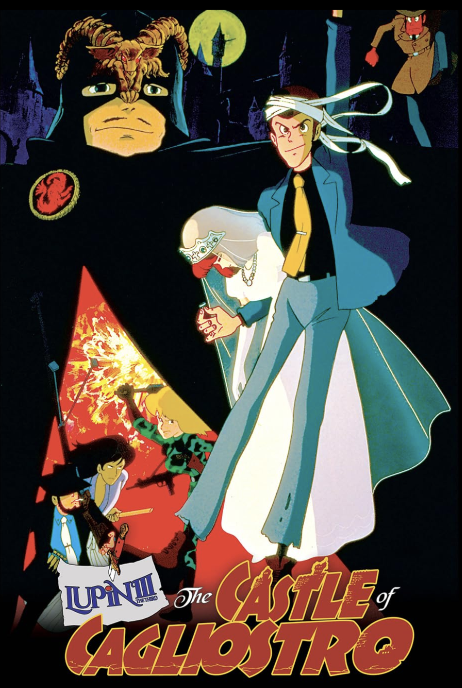

Conan: The Boy in the Future
A young boy in a post-apocalyptic world fights to protect his friends and uncover the truth behind powerful forces shaping humanity’s future.


A young boy in a post-apocalyptic world fights to protect his friends and uncover the truth behind powerful forces shaping humanity’s future.

A master thief embarks on thrilling adventures, outsmarting his rivals and evading the law while seeking legendary treasures.

A brave princess in a post-apocalyptic world strives to protect her people and the environment from destructive forces.

A young boy and girl embark on a journey to find a legendary floating castle while evading pirates and government agents.
Two sisters discover magical creatures in the countryside, forming a heartwarming bond with a gentle forest spirit named Totoro.

A young witch starts a delivery service in a new city, learning about independence, friendship, and self-discovery.

A World War I flying ace, transformed into a pig, battles sky pirates and confronts his past in a thrilling aerial adventure.

A young warrior becomes entangled in a conflict between industrial humans and forest spirits, seeking balance and understanding.

A young girl becomes trapped in a mysterious and magical world, navigating challenges and forming unexpected friendships to save her parents.

A young woman is transformed into an elderly lady by a witch's curse and seeks refuge in a magical moving castle, where she meets the mysterious wizard Howl.

A goldfish princess longs to become human after befriending a young boy, leading to magical adventures and heartfelt lessons about love and friendship.

A fictionalized biography of Jiro Horikoshi, the designer of Japanese fighter planes during World War II, exploring his dreams, love, and the impact of war on his life.

A young boy embarks on a journey of self-discovery and adventure, guided by a mysterious heron, encountering magical creatures and learning valuable life lessons.

"Reality is for people who lack imagination."
- HAYAO MIYAZAKI